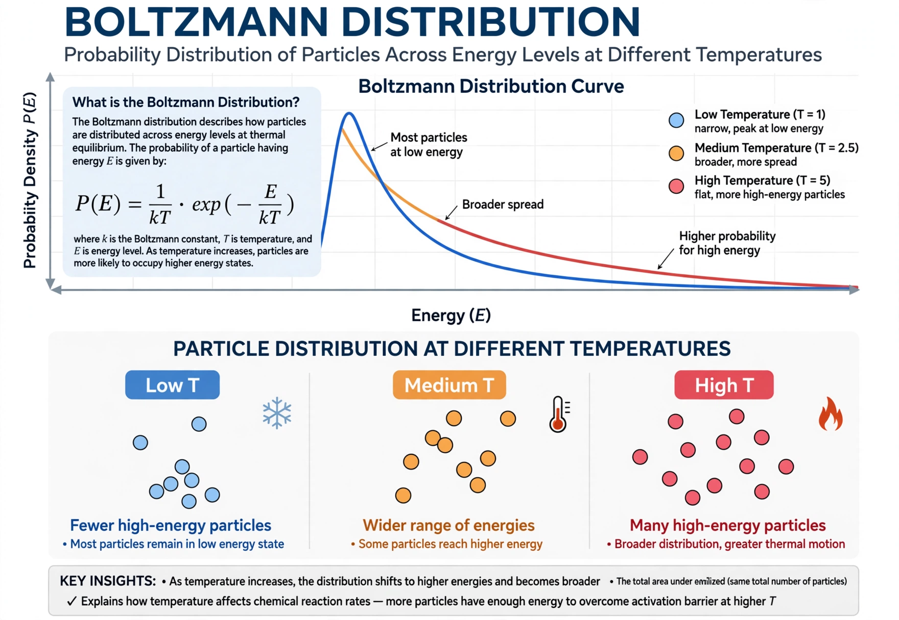

The Boltzmann distribution (Gibbs distribution) is a probability distribution in statistical mechanics giving the probability that a system will be in a certain state as a function of that state's energy and the temperature: p ∝ exp(−E / kBT), where kB is the Boltzmann constant.

pi = exp(−εi/kBT) / Z, where Z is the partition function, the sum over all states. At higher temperature the distribution spreads to higher energies; at low temperature low-energy states dominate.
It underlies the Maxwell–Boltzmann distribution of molecular speeds, atmospheric density with altitude (barometric formula), semiconductor carrier statistics, and simulated annealing / Boltzmann machines in machine learning. It was derived in the context of work by Ludwig Boltzmann and J. Willard Gibbs.